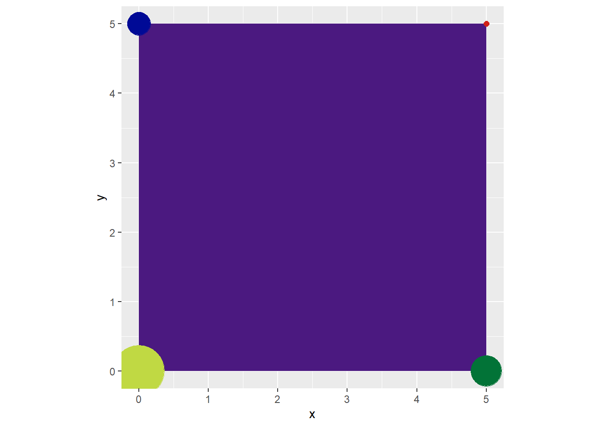
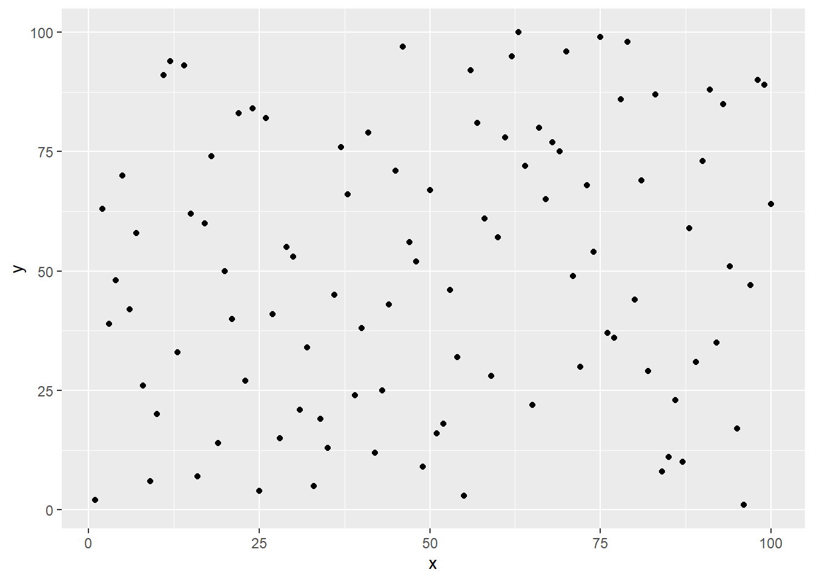
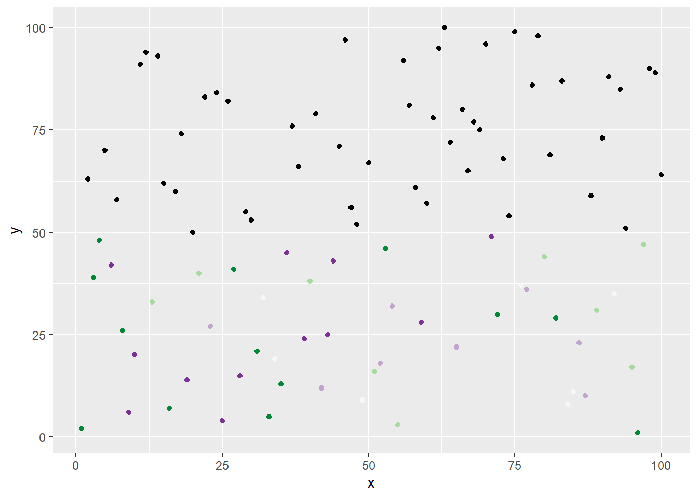

suppressPackageStartupMessages({ # remove messages when loading
library(tidyverse) # data visualization
library(tibble) # data representation
library(scales) # control appearance of axis/legend
library(ggthemes) # extra themes for ggplot2
library(rayshader) # generate 2D and 3D visualizations
library(ambient) # generate noise
library(dplyr) # manipulate data frames
library(ggplot2) # make plots
library(tictoc) # timing expressions
library(here) # file paths and referencing
library(ggforce) # addon to ggplot2
library(deldir) # calculations for planar point set
library(purrr) # more useful functions
library(tidyr) # tidy data
library(stringr) # more functions for working with strings
library(sf) # encode spatial vector data
library(cowplot) # For placing plots on top of each other
library(patchwork) # For packaging up the plots in the final image
library(magick) # put images on top of another
library(scattermore) # speed up plotting
library(data.table) # enhanced version of data.frames
})art-from-code
Repository link
Load packages
Part 2b - a
Meghan Harris’s Thinking Outside the Grid
## Example 1: Data Frame====
single_point <- tibble(x=0, y=0)
## Example 1 ggplot====
single_point %>%
ggplot(aes(x = x, y = y))+
geom_point()## Example 2: Data Frame====
random_lines <- tibble(x = sample(1:500, 50),
y = 1:50)
## Example 2: ggplot====
random_lines %>%
ggplot(aes(x=x, y=y, xend = median(x), yend = median(y)))+
geom_segment()## Example 3: Data Frame====
square <- tibble(x = c(0,5,5,0),
y = c(0,0,5,5),
labels = 1:4)
## Example 3: Geom_line() ggplot====
square %>%
ggplot(aes(x = x,
y = y,
label = labels))+
geom_line()+
geom_label()+
coord_equal()## Example 4: Geom_path() ggplot====
square %>%
ggplot(aes(x = x,
y = y,
label = labels))+
geom_path()+
geom_label()+
coord_equal()# Example 5: Geom_polygon ggplot====
square %>%
ggplot(aes(x = x,
y = y,
label = labels))+
geom_polygon()+
geom_label()+
coord_equal()# Example 6: Geom_Polygon ggplot with no fill====
square %>%
ggplot(aes(x = x,
y = y,
label = labels))+
geom_polygon(fill = NA, color = "black")+
geom_label()+
coord_equal()# Example 7: Geom_Polygon ggplot with colored points====
## Example 7: Data Frame====
square_color_points <- tibble(x = c(0,5,5,0),
y = c(0,0,5,5),
colors = c("#c0d943","#027337","#d12017","#000a96"))
## Example 7: Geom_Polygon ggplot with colored points====
square_color_points %>%
ggplot(aes(x = x,
y = y))+
geom_polygon(fill = "#4b1980")+
geom_point(color = square_color_points$colors)+
coord_equal()# Example 8: Geom_Polygon ggplot with colored points and Random Sizes====
square_color_points %>%
ggplot(aes(x = x,
y = y))+
geom_polygon(fill = "#4b1980")+
geom_point(color = square_color_points$colors,
size = sample(1:20, nrow(square_color_points)))+
coord_equal()
## Example 9: Data Frame====
random_points <- tibble(x = 1:100,
y = sample(1:100))
## Example 9: ggplot of randomized points====
random_points %>%
ggplot(aes(x=x, y=y))+
geom_point()
## Example 10: ggplot of randomized points with randomized colors====
random_points %>%
ggplot(aes(x=x, y=y))+
geom_point(color = sample(RColorBrewer::brewer.pal(5,"PRGn"), nrow(random_points), replace = TRUE))# Example 11: ggplot of randomized points with randomized colors and logic applied====
random_points %>%
ggplot(aes(x=x, y=y))+
geom_point(color = ifelse(random_points$y < 50,
sample(RColorBrewer::brewer.pal(5,"PRGn"), nrow(random_points), replace = TRUE),
"black"))
## Example 12: Lines_data Data Frame====
Lines_data <- tibble(x = rep(1, 4),
xend = rep(5, 4),
y = seq(0,6, by = 2),
yend = y )
## Example 12: Circles_data Data Frame====
Circles_data <- tibble(x = 3,
y = unique(abs(seq(0,6, by = 2) - 1)),
size = 1:3)
##Logic Check: Do these dataframes have the same number of row?##
nrow(Lines_data) == nrow(Circles_data)[1] FALSE## Example 12: Adding Lines_data and Circles_data together with inherit.aes in geom====
Lines_data %>%
ggplot(aes(x=x, y=y, xend = xend, yend = yend))+
geom_segment(size = 15)+
geom_point(data = Circles_data, aes(x=x, y=y, size = size), inherit.aes = FALSE)Warning: Using `size` aesthetic for lines was deprecated in ggplot2 3.4.0.
ℹ Please use `linewidth` instead.# Example 13: Adding Lines_data and Circles_data together with layer function====
Lines_data %>%
ggplot(aes(x=x, y=y, xend = xend, yend = yend))+
geom_segment(size = 15)+
layer(geom = "point",
data = Circles_data,
stat = "identity",
position = "identity",
mapping = aes(x=x, y=y, size = size),
inherit.aes = FALSE)
# Example 14: Adding Lines_data and Circles_data together with annotate function====
Lines_data %>%
ggplot(aes(x=x, y=y, xend = xend, yend = yend))+
geom_segment(size = 15)+
annotate(geom = "point",
x= Circles_data$x,
y= Circles_data$y,
size = Circles_data$size)# Star Backgrounds====
## Making four different stars "backgrounds" with four different colors====
Space_colors <- c("Topleft"="#000000",
"Topright"="#130321",
"Bottomleft"="#330500",
"Bottomright"="#8a4500")
# Making a data set that will be used to create all star backgrounds====
stars <- tibble(crossing(x = seq(1,2000,100),
y = seq(1,2000,100)))
## Making the list to hold the "space" plots====
All_stars <- list()
## Iterating through the "space_colors" to make four different plots====
for(i in seq_along(Space_colors)){
All_stars[[i]] <- stars %>%
ggplot(aes(x = x, y = y))+
geom_jitter(size = sample(c(.02,.04,.06,.8),nrow(stars), replace = TRUE), color = "white")+
theme_void()+
theme(plot.background = element_rect(fill = Space_colors[i], color = "#ffffff", size = 6))
}Warning: The `size` argument of `element_rect()` is deprecated as of ggplot2 3.4.0.
ℹ Please use the `linewidth` argument instead.## Naming the plots just to help keep track of what's going where====
names(All_stars) <- names(Space_colors)
# Planet Creations====
## Setting the color palettes for each planet quad====
Planet_colors <- list("Topleft" = c("#194157","#008dd7","#085b88","#26925e","#095c88"),
"Topright" = c("#480463","#392242","#1e0329","#bf9232","#120b17"),
"Bottomleft" = c("#47322d","#6b1c09","#a30000","#6b1d09","#851205"),
"Bottomright" = c("#c7a602","#998523","#ba690d","#755b3d","#dbab39"))
## Setting the colors of each planet's borders====
Planet_borders <- c("Topright" = "#333333",
"Topright" = "#120b17",
"Bottomleft" = "#260f09",
"Bottomright" = "#5c523a")
# Making a dataset that will be used to create all the planets====
planet <- tibble(crossing(x = sample(1:1000,100, replace = TRUE),
y = sample(1:2000, 100, replace = TRUE)))
## Making the list to hold the "planet" plots====
All_planets <- list()
## Iterating through the "planet_colors" to make four different planet plots====
for(i in seq_along(Planet_colors)){
All_planets[[i]] <- planet %>%
ggplot(aes(x = x, y = y))+
scale_fill_manual(values = sample(Planet_colors[[i]],100, replace = TRUE))+ #100 is just a arbitrary "safe" number I picked. geom_density does background calcs to create levels that varies based on data.
geom_density2d_filled(color = Planet_borders[i], size = 2)+
coord_polar(clip = "on")+
theme_void()+
theme(legend.position = "none")
}
## Naming the plots just to help keep track of what's going where====
names(All_planets) <- names(Planet_colors)
# Saving Planets into the directory====
for(i in seq_along(All_planets)){
ggsave(paste0("planets/",
names(All_planets)[i],
"_planet.png"),
All_planets[[i]],
bg = "transparent",
device = "png")
}Saving 7 x 5 in image
Saving 7 x 5 in image
Saving 7 x 5 in image
Saving 7 x 5 in image# Loading Planets back into the environment as PNGs====
Planet_PNGs <- list()
for(i in seq_along(All_planets)){
Planet_PNGs[[i]] <- png::readPNG(paste0("planets/",
names(All_planets)[i],
"_planet.png"))
}
## Setting names to keep track of the planets====
names(Planet_PNGs) <- names(All_planets)
# Combining both the stars and planets to create four plots in total====
Combined_plots <- list()
for(i in seq_along(All_planets)){
Combined_plots[[i]] <- ggdraw(All_stars[[i]]) +
draw_image(Planet_PNGs[[i]])
}
## Setting names to keep track of the plots===
names(Combined_plots) <- names(Planet_PNGs)
## Plucking out all the individual plots===
Topleft <- Combined_plots %>% pluck("Topleft")
Topright <- Combined_plots %>% pluck("Topright")
Bottomright <- Combined_plots %>% pluck("Bottomright")
Bottomleft <- Combined_plots %>% pluck("Bottomleft")
# Final output construction with patchwork functions====
Planet_Quad <- (Topleft + Topright) / (Bottomleft + Bottomright)
# View the piece#
Planet_Quad# Setting parameters to prep ggplot to plot data in a "circular" fashion on the Cartesian coordinate system====
## Angle "slices"/ Sine/Cosine Frequency====
theta <- seq(0, 40*pi, length = 100)
## Number of divisions/rows in the data wanted====
n <- 500
## "Radial" setting of the "circle" to create "n" different marks====
r = 1:n
## Setting up the custom color palette====
colors <- c("#af3918", "#a21152", "#822b75","#612884","#154baf",
"#0b82b9", "#277e9d","#488e35","#e3a934","#b2336a")
# Placing everything into a dataset====
data <- tibble(x = cos(theta)*r,
y = sin(theta)*r)
# Pulling it all together====
Rainbow_Rose <- data %>%
ggplot(aes(x = x, y = y, color = color))+
geom_path(color = rep(colors, each = n/10), size = 1)+
theme_void()+
theme(legend.position = "none",
panel.background = element_rect(fill = "black"))
# View it #
Rainbow_Rose
George Savva’s Mathematical Art and Creative Coding
set.seed(2911)
N=20
dat <- expand.grid(x=seq(-1,1,l=20), y=seq(-1,1,l=20))
setDT(dat)
dat[ , z := x+1i*y ] # represent positions as complex numbers
dat[ , v := z*exp(1i*3*pi/5) ] # create vector field by rotating z by 3pi/5.
dat[ , v := v/Mod(v) ]
dat[ , znew := z + .1*v ]
plot(dat$z, pch=19)
arrows(Re(dat$z), Im(dat$z), Re(dat$znew), Im(dat$znew), length=0.05)# N streamlines and m iterations
N=20
m=100
# each row is a streamline
pos=matrix(nrow=N, ncol=m)
# make random starting positions
startz = runif(N,-1,1) + 1i*runif(N,-1,1)
# put these starting positions into the first column of pos.
pos[,1] <- startz
# now create the subsequent columns by iterating the equations above.
for(i in 2:m){
v <- pos[,i-1]*exp(1i*3*pi/5)
pos[,i] <- pos[,i-1] + .02 * v/Mod(v)
}
plot(dat$z, pch=19,col="grey")
arrows(Re(dat$z), Im(dat$z), Re(dat$znew), Im(dat$znew), length=0.05,col="grey")
#apply the `lines` function over the rows of pos to add the streams
apply(pos, 1, lines)NULL# takes a function and draws the vector field.
plotFlow <- function(FUN,col="black") {
dat <- expand.grid(x=seq(-1,1,l=20), y=seq(-1,1,l=20))
setDT(dat)
dat[ , z := x+1i*y ] # represent position as a complex number
dat[ , v := FUN(z) ] # create vector field
dat[ , v := v/Mod(v) ]
dat[ , znew := z + .1*v ]
plot(dat$z, pch=19,col=col)
arrows(Re(dat$z), Im(dat$z), Re(dat$znew), Im(dat$znew), length=0.05,col=col)
}
plotFlow( \(z) (z-.5)*(z+.5)*z )plotFlow( \(z) (z-.5)*(z+.5)*z / ((z-0.5i+0.5)* (z+0.5i-0.5)*(z+.1-.1i)) )flowFunction = \(z) (z-.5)*(z+.5)*z / ((z-0.5i+0.5)* (z+0.5i-0.5)*(z+.1-.1i))
# N streamlines and m iterations
makeStreams <- function(startpos,m=200,FUN,d=0.02){
pos=matrix(nrow=N, ncol=m)
startz = runif(N,-1,1) + 1i*runif(N,-1,1)
pos[,1] <- startz
for(i in 2:m){
v <- FUN(pos[,i-1])
pos[,i] <- pos[,i-1] + d * v/Mod(v)
}
pos
}
N=100
startZ <- runif(N, -1,1) + 1i*runif(N, -1,1)
pos <- makeStreams(startZ, FUN = flowFunction)
plotFlow(flowFunction, col="grey")
apply(pos, 1, lines)NULLN=1000
startZ <- runif(N, -1,1) + 1i*runif(N,-1,1)
pos <- makeStreams(startZ,FUN=flowFunction,d=0.01)
plot(NA, xlim=c(-1,1), ylim=c(-1,1))
apply(pos, 1, lines)NULLpos <- cbind(Re(as.vector(pos)), Im(as.vector(pos)))
scattermoreplot(pos,size=c(800,600), xlim=c(-1,1), ylim=c(-1,1))
scattermoreplot(pos,size=c(800,600), xlim=c(-1,1), ylim=c(-1,1))
points(c(-0.5+0.5i, 0.5-0.5i,-0.1+0.1i), col="blue", cex=2,pch=4, lwd=4)
points(c(-0.5+0i, 0.5,0), col="red", cex=2,pch=1, lwd=4)makeStreams <- function(startpos,m=100,FUN,d=0.1){
pos=matrix(nrow=length(startpos), ncol=m)
pos2=matrix(nrow=length(startpos), ncol=m)
pos[,1] <- startpos
pos2[,m] <- startpos
for(i in 2:m){
v <- FUN(pos[,i-1])
pos[,i] <- pos[,i-1] + d * v/Mod(v)
}
for(i in (m-1):1){
v <- FUN(pos2[,i+1])
pos2[,i] <- pos2[,i+1] - d * v/Mod(v)
}
pos <-cbind(pos,pos2) |> as.vector()
cbind(Re(pos),Im(pos))
}
pos <- makeStreams(startZ, FUN=flowFunction,d=0.01)
scattermoreplot(pos,size=c(1000,1000), xlim=c(-1,1), ylim=c(-1,1))makeStreams <- function(startpos,m=100,FUN,d=0.1){
N=length(startpos)
pos=matrix(nrow=N, ncol=m)
pos2=matrix(nrow=N, ncol=m)
pos[,1] <- startpos
pos2[,m] <- startpos
for(i in 2:m){
v <- FUN(pos[,i-1])
pos[,i] <- pos[,i-1] + runif(N,0,2)*d * v/Mod(v)
}
for(i in (m-1):1){
v <- FUN(pos2[,i+1])
pos2[,i] <- pos2[,i+1] - runif(N,0,2)*d* v/Mod(v)
}
pos <-cbind(pos,pos2) |> as.vector()
cbind(Re(pos),Im(pos))
}
pos <- makeStreams(startZ, FUN=flowFunction,d=0.01)
par(mar=c(1,1,1,1))
scattermoreplot(pos, size=c(1000,1000),xlim=c(-1,1), ylim=c(-1,1),asp=1,col=hsv(0,0,0,.5))# Choose the location of the poles and zeros
poles <- runif(20,-1,1) + 1i*runif(20,-1,1)
zeros <- runif(20,-1,1) + 1i*runif(20,-1,1)
# Our flow function
flowFunction <- function(z) {
fz = z-zeros[1]
for(i in zeros[-1]) fz = fz * (z-i)
for(i in poles) fz = fz / (z-i)
fz/Mod(fz)
}
# Make the streams positions
pos <- makeStreams(startZ,m=500,FUN=flowFunction,d=0.002)
# Plot
par(mar=c(1,1,1,1))
scattermoreplot(pos,size=c(1000,1000), xlim=c(-1,1), ylim=c(-1,1),asp=1,axes=F)# reduce number of poles and zeros
startZ <- 0.6*exp(2i * pi * seq(0,1,l=300))
set.seed(123)
poles <- runif(5,-1,1) + 1i*runif(5,-1,1)
zeros <- runif(10,-1,1) + 1i*runif(10,-1,1)
pos <- makeStreams(startZ,m=1000,FUN=flowFunction,d=0.002)
par(mar=c(1,1,1,1))
scattermoreplot(pos,size=c(1000,1000), xlim=c(-1,1), ylim=c(-1,1),asp=1,axes=F,col=hsv(0,0,0))# shading
startZ <- 0.6*exp(2i * pi * seq(0,1,l=10000))
pos <- makeStreams(startZ,m=200,FUN=flowFunction,d=0.005)
par(mar=c(1,1,1,1))
scattermoreplot(pos,size=c(3000,3000), xlim=c(-1,1), ylim=c(-1,1),asp=1,axes=F,col=hsv(0,0,0))# start at random points along lines passing along origin
N=5000
startZ <- runif(N,-1,1)*(1 + 1i*runif(1,-.5,.5))
pos <- makeStreams(startZ,m=200,FUN=flowFunction,d=0.01)
par(mar=c(1,1,1,1))
scattermoreplot(pos,size=c(2000,2000), xlim=c(-1,1), ylim=c(-1,1),asp=1,axes=F)# add 10 poles and 20 zeros in a circle with 0.5 radius
poles <- exp(2i*pi*runif(5))*0.3
zeros <- exp(2i*pi*runif(10))*0.3
startZ = runif(10000, -1,1) + 1i*runif(10000,-1,1)
pos <- makeStreams(startZ,m=500,FUN=flowFunction,d=0.001)
par(mar=c(1,1,1,1))
scattermoreplot(pos,size=c(3000,3000),xlim=c(-1,1), ylim=c(-1,1),axes=F,
col=hsv(0,0,0,.5))# add black background
poles <- exp(2i*pi*runif(10))*0.4
zeros <- exp(2i*pi*runif(20))*0.4
startZ <- 0.7*exp(2i * pi * seq(0,1,l=20000))
pos <- makeStreams(startZ,m=300,FUN=flowFunction,d=0.01)
par(mar=c(1,1,1,1), bg="#111111")
scattermoreplot(pos,
size=c(1800,1800),
xlim=c(-1,1),
ylim=c(-1,1),
col=hsv(1,0,1,.1),
axes=F)
# add two concentric circles of starting points, one inside and one outside ring
set.seed(1214)
polesandzeros <- .5*exp(2i*pi*seq(0,1,l=50)[-1])
pole = rbinom(20, 1,0.6)
poles = polesandzeros[pole==1]
zeros = polesandzeros[pole==0]
N=20000
startZ <- c(
0.3*exp(2i * pi * seq(0,1,l=N/2)),
0.7*exp(2i * pi * seq(0,1,l=N/2))
)
pos <- makeStreams(startZ,m=300,FUN=flowFunction,d=0.01)
par(mar=0*c(1,1,1,1), bg="#111111")
scattermoreplot(pos,
size=c(1800,1800),
xlim=c(-1,1),
ylim=c(-1,1),
col=hsv(1,0,1,.1),
axes=F)# Four circle starting positions + add color
set.seed(1214)
polesandzeros <- .5*exp(2i*pi*seq(0,1,l=40)[-1])
polesandzeros <- seq(-1,1,l=40)-0.5i*seq(-1,1,l=40) + .7i*seq(-1,1,l=40)^2 - .3i
pole = rbinom(39, 1,0.6)
poles = polesandzeros[pole==1]
zeros = polesandzeros[pole==0]
startZ <- c(
0.3*exp(2i * pi * seq(0,1,l=N/4))-0.3-0.3i,
0.2*exp(2i * pi * seq(0,1,l=N/4))+0.3-0.3i,
0.15*exp(2i * pi * seq(0,1,l=N/4))-0.6+0.6i,
0.5*exp(2i * pi * seq(0,1,l=N/4))+0.3+0.3i
)
pos <- makeStreams(startZ,m=300,FUN=flowFunction,d=0.01)
par(mar=0*c(1,1,1,1), bg="#111111")
scattermoreplot(pos,size=c(1800,1800),
xlim=c(-1,1),
ylim=c(-1,1),
col=hsv(0,rep(seq(0,1,l=N/4),4*600),1,0.1),
axes=F)# Starting points at 6 circles + add color
set.seed(1211)
polesandzeros <- seq(-1,1,l=40)-0.5i*seq(-1,1,l=40) + .7i*seq(-1,1,l=40)^2 - .3i
pole = rbinom(39, 1,0.5)
poles = polesandzeros[pole==1]
zeros = polesandzeros[pole==0]
N=60000
startZ <- c(
0.5*exp(2i * pi * seq(0,1,l=N/6)),
0.3*exp(2i * pi * seq(0,1,l=N/6)),
0.4*exp(2i * pi * seq(0,1,l=N/6)),
0.6*exp(2i * pi * seq(0,1,l=N/6)),
0.8*exp(2i * pi * seq(0,1,l=N/6)),
1.0*exp(2i * pi * seq(0,1,l=N/6))
)
pos <- makeStreams(startZ,m=500,FUN=flowFunction,d=0.005)
col=rep(c(hsv(0, 1,0.5,0.4),
hsv(0.0,1,0.5,0.4),
hsv(0.1,1,0.5,0.4),
hsv(0.9,1,0.5,0.4),
hsv(0.8,1,0.5,0.4),
hsv(1, 1,0.5,0.1)
), each=N/6)
col <- rep(col,1000)
par(mar=0.1*c(1,1,1,1), bg="#dddddd")
scattermoreplot(pos,size=c(3000,3000),
xlim=c(-1,1),
ylim=c(-1,1),
col=col,
axes=F)I’m not going to lie, I did not know 80% of what was happening with the code. I just know what they are intended to do.
Jiwan Heo’s tutorial on rotating lines
# create 10x10 canvas
dat <- crossing(x = 1:10, y = 1:10) %>%
mutate(id = 1:100)
dat %>% head()# A tibble: 6 × 3
x y id
<int> <int> <int>
1 1 1 1
2 1 2 2
3 1 3 3
4 1 4 4
5 1 5 5
6 1 6 6## # A tibble: 6 x 3
## x y id
## <int> <int> <int>
## 1 1 1 1
## 2 1 2 2
## 3 1 3 3
## 4 1 4 4
## 5 1 5 5
## 6 1 6 6
dat %>% ggplot(aes(x, y)) + geom_point()# connect the dots and remove the point at (10,10)
dat <- dat %>%
left_join(dat %>% mutate(id = id-1), by = "id") %>% # left_join gang
rename(x = x.x, y = y.x, xend = x.y, yend = y.y) %>%
filter(!is.na(xend))
dat %>%
ggplot(aes(x, y)) +
geom_point() +
geom_segment(aes(x = x, y = y, xend = xend, yend = yend))# get rid of diagonal lines
dat <- dat %>%
filter(x == xend)
# Same code as above, not formatting cuz space
dat %>% ggplot(aes(x, y)) + geom_point() + geom_segment(aes(x = x, y = y, xend = xend, yend = yend))# add dots at the midpoints
dat <- dat %>%
mutate(xmid = (x+xend) / 2,
ymid = (y+yend) / 2)
dat %>%
ggplot() +
geom_point(aes(x, y)) +
geom_point(aes(xmid, ymid, color = "red", size = 3), show.legend = FALSE) +
geom_segment(aes(x = x, y = y, xend = xend, yend = yend))# rotate lines
dat <- dat %>%
mutate(angle = id/100 * 2*pi,
newxend = xmid + cos(angle),
newyend = ymid + sin(angle),
newx = xmid - cos(angle),
newy = ymid - sin(angle))
dat %>%
ggplot() +
geom_point(aes(x, y)) +
geom_point(aes(xmid, ymid, color = "red", size = 3), show.legend = FALSE) +
geom_segment(aes(x = x, y = y, xend = xend, yend = yend)) +
geom_segment(aes(x = newx, y = newy, xend = newxend, yend = newyend), color = "red")Part 2b - c
Art Piece 1
# data frame
random_lines <- tibble(x = sample(1:500, 50),
y = 1:50)
# ggplot
random_lines %>%
# change color of lines to green
ggplot(aes(x=x, y=y, xend = median(x), yend = median(y))) +
geom_segment(color = "darkgreen") +
# add a brown line that goes from center of green lines to bottom of graph
geom_segment(aes(x = 243, y = 25, xend = 220, yend = -30), color = "burlywood3", size = 2) +
# change color of background to black
theme(plot.background = element_rect(fill = "skyblue", colour = "skyblue"),
panel.background = element_rect(fill = "skyblue", colour = "skyblue"),
axis.title = element_blank(), # remove axis title
axis.text = element_blank(), # remove axis text
axis.ticks = element_blank(), # remove axis ticks
axis.line = element_blank(), # remove axis lines
panel.grid = element_blank() # remove grids
)Warning in geom_segment(aes(x = 243, y = 25, xend = 220, yend = -30), color = "burlywood3", : All aesthetics have length 1, but the data has 50 rows.
ℹ Did you mean to use `annotate()`?Palm Tree, created on 6/4/2024 The inspiration came from seeing one of the examples in Meghan Harris’s “Thinking Outside the Grid”. I thought it looked like a tree so I added a trunk and it didn’t look bad. For this art piece, I used the code from Harris’s second example to create the leaves of the tree. Then I used my knowledge of ggplot to add another line to symbolize the trunk of a tree while also changing their colors.
Art Piece 2
set.seed(2911)
N=20
dat <- expand.grid(x=seq(-1,1,l=20), y=seq(-1,1,l=20))
setDT(dat)
dat[ , z := x+1i*y ] # represent positions as complex numbers
dat[ , v := z*exp(1i*3*pi/5) ] # create vector field by rotating z by 3pi/5.
dat[ , v := v/Mod(v) ]
dat[ , znew := z + .1*v ]
# Set margin to zero for no axis titles or lines, change background color to red
par(mar = rep(0, 4), bg="red")
plot(dat$z, pch=19)
arrows(Re(dat$z), Im(dat$z), Re(dat$znew), Im(dat$znew), length=0.05)# N streamlines and m iterations
N=20
m=100
# each row is a streamline
pos=matrix(nrow=N, ncol=m)
# make random starting positions
startz = runif(N,-1,1) + 1i*runif(N,-1,1)
# put these starting positions into the first column of pos.
pos[,1] <- startz
# now create the subsequent columns by iterating the equations above.
for(i in 2:m){
v <- pos[,i-1]*exp(1i*3*pi/5)
pos[,i] <- pos[,i-1] + .02 * v/Mod(v)
}
# make dots white and make arrows red
plot(dat$z, pch=19,col="white")
arrows(Re(dat$z), Im(dat$z), Re(dat$znew), Im(dat$znew), length=0.05,col="red")
#apply the `lines` function over the rows of pos to add the streams
apply(pos, 1, lines)NULLEdge of Insanity, created on 6/4/2024 There wasn’t much inspiration other than thinking the whirlpool-esque lines in George Savva’s tutorial on flow fields looked cool. Doing a whirlpool seemed boring so I played with different colors and ended up with this weird red background and white dot palette. For this art piece, I used the code from Savva’s example to create the whirlpools for the lines. Then I had to look up how to remove the axis and change background color online because the normal geom way didn’t work.
Art Piece 3
plot_weird_segments <- function(ncols, nrows, fin=ncols*nrows, frequency=0.25) {
df <- crossing(x = 1:ncols, y = 1:nrows) %>%
mutate(id = 1:fin)
df <- df %>%
left_join(df %>% mutate(id = id-1), by = "id") %>%
rename(x = x.x, y = y.x, xend = x.y, yend = y.y) %>%
filter(!is.na(xend)) %>%
filter(x == xend)
df <- df %>%
mutate(xmid = (x+xend) / 2,
ymid = (y+yend) / 2,
angle = (id/fin) * pi / frequency) %>%
mutate(newxend = xmid + abs(cos(angle)) * (runif(n(), min = -1, max = 1)),
newyend = ymid + abs(sin(angle)) * (runif(n(), min = -1, max = 1)),
newx = xmid - abs(cos(angle)) * (runif(n(), min = -1, max = 1)),
newy = ymid - abs(sin(angle)) * (runif(n(), min = -1, max = 1))) %>%
mutate(newalpha = runif(n(), min = 0, max = 1),
newsize = runif(n(), min = 0.5, max = 3),
newcolor = sample(rainbow(fin), n(), replace = TRUE))
ggplot(df) +
geom_segment(aes(x = newx, y = newy, xend = newxend, yend = newyend, size = newsize, alpha = newalpha, color = newcolor),
show.legend = FALSE) +
scale_size_continuous(range = c(1, 6)) +
scale_alpha_continuous(range = c(0.2, 0.8)) +
theme_void() +
theme(
plot.background = element_rect(fill = "black")
)
}
plot_weird_segments(ncols = 25, nrows = 25, frequency = 0.021575)Confetti at Night, created on 6/4/2024 The main inspiration came from messing around with Jiwan Heo’s example code and finding a way to make it more random. I also made it more colorful and the end result was pretty satisfying to look at. For this art piece, I used the code from Heo’s example to create the random colorful rectangles. The other components of the art piece are from what I’ve learned in class.
Write a 8-10 sentence summary at the end about your process: What was new for you? What was familiar? What did you learn? How did following the exercises/tutorials go for you?
Everything in the tutorials seemed foreign to me besides the math. Trying to understand the code was difficult as some of the code was completely new to me. There were some stuff that was familiar to me like creating vector fields. I learned a great amount from these tutorials like how to make 3D art from lines and adding shadows to them. Following the tutorials was difficult because there’s a lot to interpret. However, I could understand more after I fidgeted with the code.